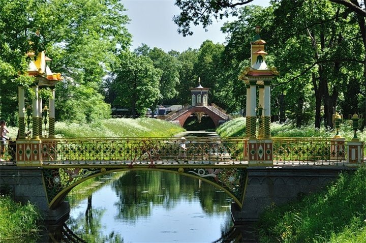
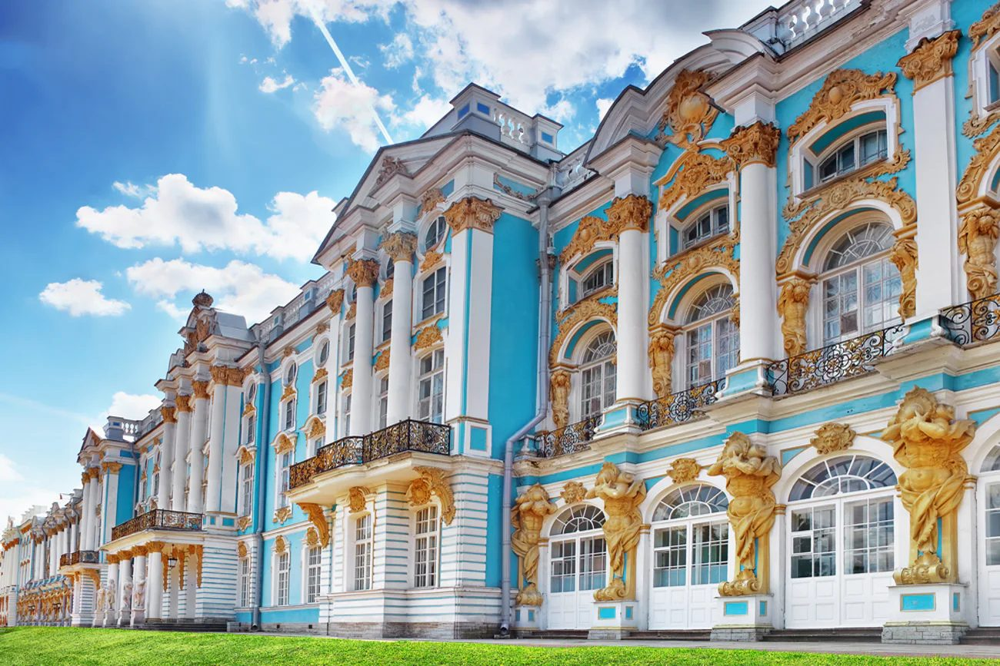
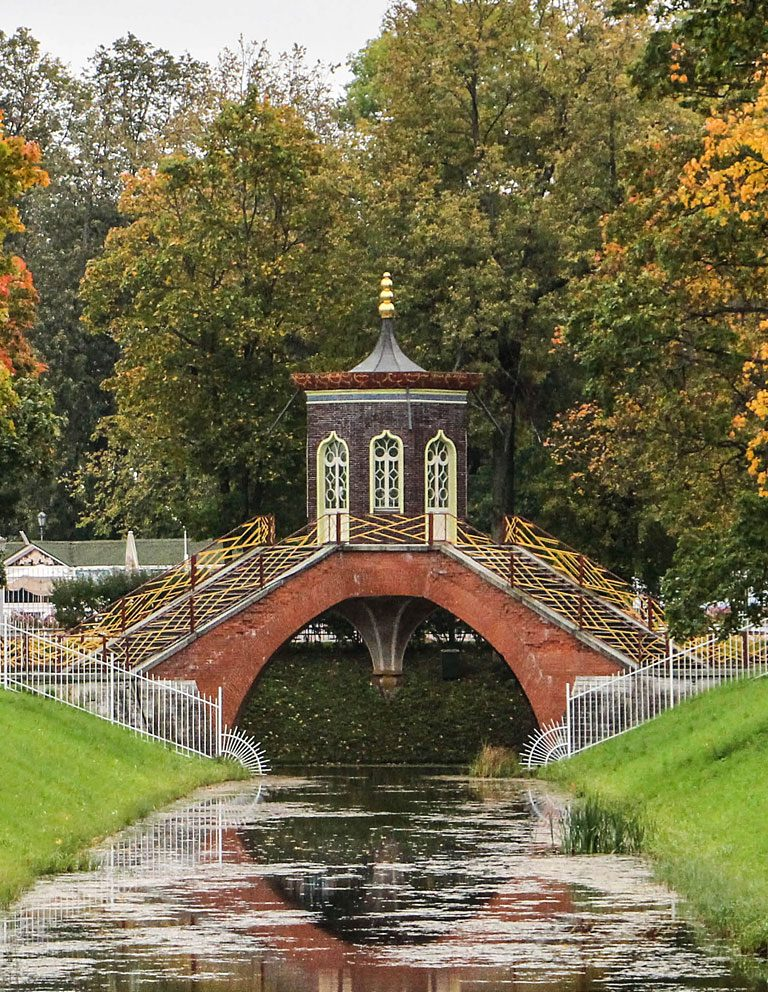
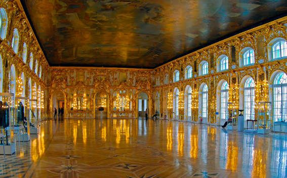
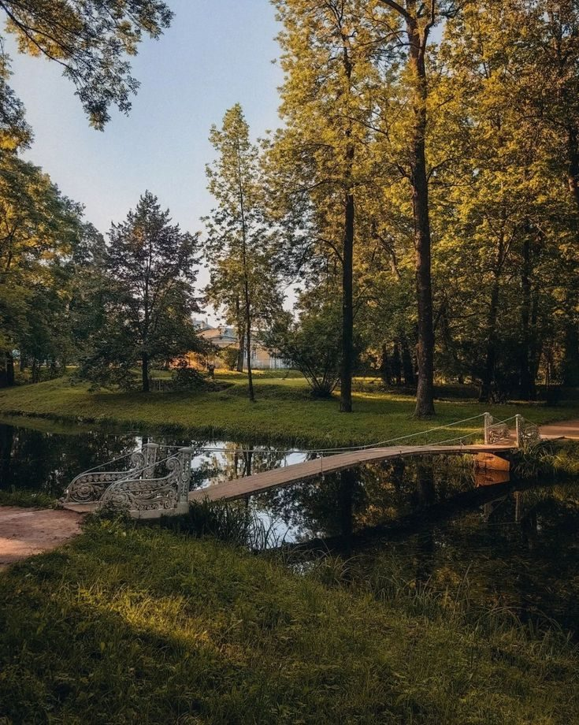
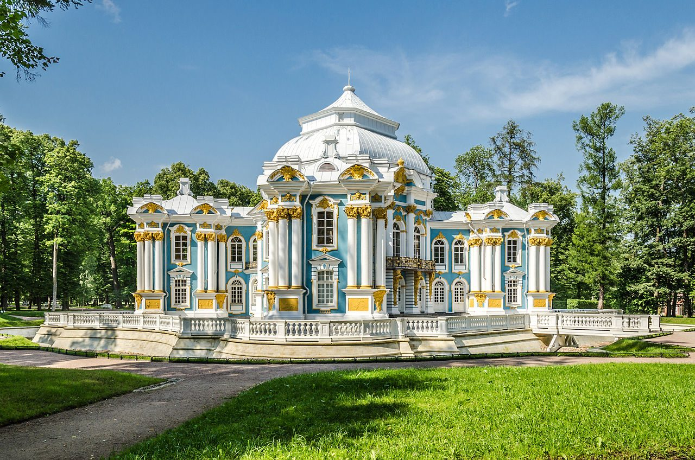

Китайская деревня
30–40 минЯрко-красные пагоды посреди петербургского парка выглядят абсурдно и прекрасно. Рядом Большой китайский мост с вазонами и Крестовый мост-беседка.
Суббота · сбор в 13:00
Приезжаем к обеду, берём пиццу по дороге от вокзала, едим на траве у канала, кормим уток. Дальше — Екатерининский дворец и круг к вечернему свету над Большим прудом.

Как ложится день
Жёстко привязан только сеанс во дворце — внутрь пускают лишь 15 минут после его начала. Всё остальное сдвигается как пойдёт.



Куда идём
Одна петля от вокзала и обратно. Цифры на карте совпадают со списком под ней.
Если захочется большего
Всё в пределах получаса ходьбы друг от друга — решаем прямо на пледе. Фильтр отсеет то, что сегодня не заходит.
По этому фильтру ничего не осталось
Одна на всех
Выбираем до того, как купим билеты: от этого зависит время сеанса.
Максимум травы, минимум шагов. Около 3 км.
Ради Янтарной комнаты. Сеанс на 15:00.
Для тех, кому надо разгуляться. 6–7 км.
Что надо знать
Важно про пикник. В Екатерининском парке на газонах располагаться нельзя — там охрана, и с пледа попросят встать. Все посиделки только в Александровском парке, он для этого и выбран.
